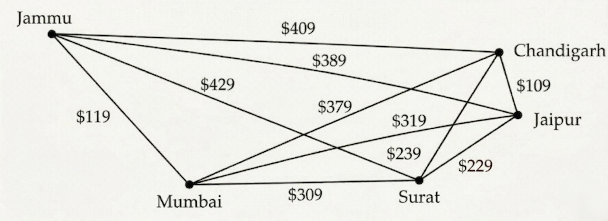

B.Tech. IV Semester
Examination, June 2024
Grading System (GS)
Max Marks: 70 | Time: 3 Hours
Note:
i) Answer any five questions.
ii) All questions carry equal marks.
a) Let T be the set of positive integers less than 10 and let "R be the relation on T defined by aRb if and only if $|a^2 - b^2|$ is a multiple of 5". Prove that R is reflexive, symmetric, but not transitive. (Unit 1)
b) Consider a set C = {1, 2, 3, 4, 5, 6, 8, 10, 12, 15} ordered by divisibility. Draw its Hasse diagram. (Unit 1)
a) Consider two sets A and B. Let $A = \{2, 3, 4, 5\}$ and $B = \{4, 5, 6, 7\}$ Using Venn diagrams, prove the following statements:
Prove that $(A \cup B) = A' \cap B'$.
Prove that $(A \cap B)' = A' \cup B'$. (Unit 1)
b) Given the recurrence relation $a_n = a_{n-1} + 4a_{n-2}$ with initial conditions $a_0 = 2$ and $a_1 = 5$, determine the closed-form expression for the sequence. (Unit 2)
a) Show that the set $H = \{e, a, a^2, a^3\}$ is a subgroup of a group G where $G = \{e, a, a^2, a^3, b, ab, a^2b, a^3b\}$. (Unit 2)
b) Let (A, *) be a semigroup. Show that, for a, b, c in A, if $a * c = c * a$ and $b * c = c * b$, then $(a * b) * c = c * (a * b)$. (Unit 2)
a) Let G be a simple graph. Show that the relation R on the set of vertices of G such that uRv if and only if there is an edge associated to (u, v) is a symmetric, irreflexive relation on G. (Unit 3)
b) Find a route with the least total airfare that visits each of the cities in this graph, where the weight on an edge is the least price available for a flight between the two cities.

(Unit 3)
The weighted graphs in the figures here show some major roads in New Jersey.
Part (A) shows the distances between cities on these roads; Part (B) shows the tolls.
![Two undirected graphs of major roads in New Jersey with identical vertices and edges but different weights. The vertices are Newark, Woodbridge, Asbury Park, Atlantic City, Cape May, Trenton, and Camden. The edges are: Newark to Woodbridge, Woodbridge to Trenton, Woodbridge to Camden, Woodbridge to Asbury Park, Trenton to Camden, Trenton to Asbury Park, Camden to Asbury Park, Camden to Cape May, Asbury Park to Atlantic City, and Atlantic City to Cape May. In Part (A), the edge weights represent distances: Newark-Woodbridge (20), Woodbridge-Trenton (42), Woodbridge-Camden (40), Woodbridge-Asbury Park (35), Trenton-Camden (30), Trenton-Asbury Park (60), Camden-Asbury Park (55), Camden-Cape May (85), Asbury Park-Atlantic City (75), and Atlantic City-Cape May (45). In Part (B), the edge weights represent tolls: Newark-Woodbridge ($0.60), Woodbridge-Trenton ($1.00), Woodbridge-Camden ($0.00), Woodbridge-Asbury Park ($0.75), Trenton-Camden ($0.70), Trenton-Asbury Park ($0.00), Camden-Asbury Park ($1.25), Camden-Cape May ($0.00), Asbury Park-Atlantic City ($1.25), and Atlantic City-Cape May ($0.75).](ques-diagrams/Q.5ab-june-2024.png)
a) Find a shortest route in distance between Newark and Camden, and between Newark and Cape May, using these roads. (Unit 3)
b) Find a least expensive route in terms of total tolls using the roads in the graph between the pairs of cities in part (A). (Unit 3)
a) Calculate the gradient of the function $f(X) = Tr(X^T X)$ where X is a matrix. (Unit 4)
b) Write a short note on Cholesky Decomposition. (Unit 4)
a) Define Hypothesis. Write a short note on Null Hypothesis and Alternative Hypothesis. (Unit 5)
b) Suppose the average salary of a principal in a college in the private sector is Rs. 45,000 per month, and a sample of 50 principals has a mean of Rs. 48,326 with a significance level of $\alpha = 0.05$. Can we claim that principals earn Rs. 45,000 per month, given that the standard deviation of the population is Rs. 1,523? (Unit 5)
Write short note on any two:
a) Recurrence Relation (Unit 2)
b) Tautologies and Contradiction (Unit 3)
c) Time Series Analysis (Unit 5)